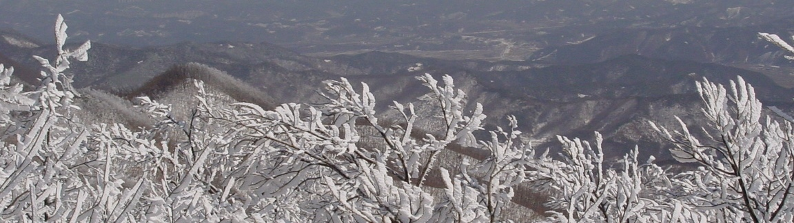

Homer Away From Home
From Poet, Mudfish and the Dew of Wisdom: A Korean Sabbatical (2001)

About two months ago we were told by the husband of one of Bo’s old college friends that we had to mark February 25 on our calendar. He was the mountaineering enthusiast who took us on an arduous and terrifying (to me at least) climb in autumn, and now he was organizing another expedition. His name was Dr. Suh. He was a specialist in internal medicine and president of the “Seoul Physician’s Mountaineering Society”. He had been busy organizing their most important annual event, a winter trek to a mountain peak followed by a ceremony dedicated to the Mountain God. And we were invited.
Why? The obvious explanation was that a foreigner was to be sacrificed on the mountaintop, appeasing the mountain god and allowing spring to come. But the actual reason was more complex.
It turns out that Dr. Suh’s wife, after publishing a survey textbook on Eastern literature (she was a lecturer in early Korean literature), decided, to help grease her career path toward professorhood, to write a complementary textbook on Western literature. I may have mentioned this book before. It surveys the grand panorama of European and American literature, beginning at the Iliad and culminating in what every educated person knows is the ultimate expression of Western genius, Margaret Mitchell’s Gone With The Wind.
In discussing this book with Bo, she learned I had taken three years of Ancient Greek in college, and Dr. Suh had an idea. Would I find a passage in Homer that I could read aloud, in Greek, at this mountain god ceremony? Bo would follow me by reading a translation in Korean. So, sure, I said yes. (Pretentious?)
Of course, I didn’t have any books here, but there was always www.perseus.org. I couldn’t find anything in the Iliad or the Odyssey that was suitable, but I did find the Homeric Hymn “To Earth the Mother of All”, and, though it was apparently of later date than the two epics (7th century BCE), I didn’t think the doctors would argue. Bo and I translated it into her best pseudo-archaic Korean. I would like to say I discovered that Ancient Greek and Korean had many surprising affinities, but in fact grammatically and expressively they proved to be light-years apart. Still, we stuck to our goal of having the Korean/Greek lines in bijective correspondence (a “line” is a well-defined unit, since the hymn is in dactylic hexameter). Through the miracle of Unicode and Word 2000 we managed to get both Korean and Greek printed in the same Word document, and this was included in the booklet they distributed to the doctors’ group the day of the climb.
“Don’t worry,” said Dr. Suh, “the climb won’t be as rough as last time.”
It was a huge event. Bo and I took the subway to a stadium complex by the old east gate of Seoul, arriving at about 7am. There we found the five buses that would carry 150 physicians (plus a few spouses and friends) about two hours south to a mountain in North Chungchong Province. Coincidentally, the name of the mountain was the same as the one we tried to climb with the kids a week earlier, Mount Kwangdok.
It turned out to be an inopportune day for the Seoul doctors. A few days earlier the Korean legislature had passed a law giving doctors more control over the distribution of prescription drugs, taking some power away from pharmacists As a result, the angry pharmacists were going to stage a demonstration downtown later in the day. Some of the leaders of the physicians group had to stay in the city, lest they be called on by reporters to comment on the demonstration. The pharmacists and physicians had been battling each other for the better part of a year, and everyone was quite weary. (The physicians went on a national strike last summer, protesting government plans to prohibit physicians from filling their patients’ prescriptions, requiring that patients take the prescription to a pharmacist instead, thereby avoiding a conflict of interest. The strike was serious enough that it made the U.S. State Department’s web page of warnings to American travelers. Dr. Suh was one of the strike’s leaders. When the strike was over, he allowed each of his patients a “free” visit, and this was hurting him financially.)
If the pharmacists were all off somewhere getting ready for their demonstration, the drug company reps certainly were not. They were here in force, and they pulled their flatbed trucks full of boxes right up next to our parked buses.
As we settled in our seats getting ready for the journey, the drug company people boarded the bus and started handing out freebies. First, we each got a very nice small backpack. It was emblazoned with “Seoul Physician’s Mountaineering Society” (in Korean), followed by their URL, followed by the drug company’s name.
After the backpacks were distributed, we each received folding cushions, a small vinyl bag, a metal drinking cup, a thermos, a pair of strap-on “eisen”, a large folding picnic mat, a bottle of green Gatorade, and a large envelop of medication samples (gingko tablets, two ulcer remedies, and a muscle relaxant). I felt thoroughly lobbied. I imagine that for anyone whose image of Korean medicine is Hawkeye and Trapper John cutting chests in dimly lit tents, this US-style corporate largesse will be an eye-opener.
After the drug company reps departed, the organizers distributed an eleven- page “program” for the mountain god ceremony (with an enigmatic half-page written in Ancient Greek), and our breakfast. The latter was sushi stuffed with some vaguely Spamoid meat product, mixed with spinach, carrot and fake crab.
As always, I was the only non-Korean. My name in roman letters stood out starkly on the roster printed in the back of the program. Another nonanonymous day.
As the drivers pulled out of the parking lot, our bus leader got up, grabbed the bus microphone, and announced the day’s schedule. We would drive to the mountain, climb to the summit, then descend to a valley. There, by a broad stream, we would hold the ceremony to the Mountain God. This would be followed by lunch, featuring the pig that was sacrificed. (What?) After that, the men would go off and do mogyokt’ang. ßTranslation: getting naked with a bunch of Korean guys in a hot spring bathhouse.
I turned and shot Bo a look.
“Oh,” she said. “I forgot to tell you about that part.”
* * *
The bus drove south to the mountain. The “violent snow” (a Korean expression) of the previous week was still visible, but the weather had not been very cold in the meantime and some of it was starting to melt. The caravan of buses drove onto Interprovince Expressway 1 (its number shown in a blue- and-red shield in exactly the same style as a US interstate highway marker) and after an hour we took a sequence of increasingly smaller roads to enter a national forest, ending up at the base of the mountain. After a group photo by a large banner (“Seoul Physicians’ Mountaineering Society 2001 Mountain God Ritual Event”) we strapped on our “eisen” and began our trek.
It was the most beautiful hike I’d ever taken. The snow got deeper and the path rose more steeply as we continued. It was not nearly as harrowing as last fall’s trip to Pukhan Mountain; there were no rock faces to clamber up on, just densely wooded mountainside. The really steep segments of the path had rope strung between posts so we could pull ourselves up. After two hours we reached an elevation where a sudden and dramatic change occurred. All the bare trees became glazed with a thick coating of ice crystals. From a distance it looked like heavy snow was stacked on every little branch, but up close it resembled a kind of large-scale crystalline growth. Hoarfrost. The landscape was pure fairyland. The trees looked like some white sparkling confection. The sky was intensely blue, the sun was high, and off in the distance snowy mountains continued for miles to a sharp horizon. The temperature seemed to be a perfect zero Celsius: warm enough for comfort, cold enough for beauty.
After nearly three hours we reached the summit, a flat treeless space the size of a baseball diamond. The group had straggled itself out considerably, and arrivals were saltatory. We drank makkǒlli from paper cups, and snacked on hard-boiled quail eggs, roasted chestnuts and fresh mandarin oranges. Even experienced mountain hikers were in awe at the dramatic view this stunning clear sky and post-heavy-snowfall landscape afforded. We posed behind the banner again for another photo. Soon the leaders shouted “Ha San!”, a Chinese expression, very formal when spoken in Korean, meaning “Down Mountain!”, and we began to descend on the other side.
The descent was much more difficult. Even with the ropes to hang on to, we kept losing our footing in the thick snow on the steep gradients. The descent was slow and seemed interminable. How nature embedded this mountain in R3 was hard to imagine. Somehow this side of the mountain carried a bizarre Escherized topology, allowing us to descend a long distance and yet end up at a higher elevation. I used strange muscles in the soles of my feet I probably had never used before, and they were quickly used up. The other leg muscles followed. I soon became very wobbly. Bo thoughtfully brought a Snickers bar to share, and this helped a bit, but by the time we reached the valley on the other side I could not stand up without both legs quivering.
After a while we arrived at the valley, which was a wide muddy field adjacent to a rushing stream. The group had reserved this space in the national forest, and helpers had driven in directly from the other direction to assist in the preparations. Our emptied buses had also driven around the mountain and were parked nearby. Yet another banner hung across one end of the field. A raised platform and some tables had been set up, and women were boiling rice and setting out kimchi and pickled radishes. There was a row of grills where cooks were frying very thick slabs of bacon.
The most dramatic sight was at the end of the field, just under the banner. An altar had been set up. It was a low table covered in white paper. There was a golden teapot, and silver plates containing figs, traditional Korean honey-rice cookies, bananas and oranges. There was also a large silver tub filled with ttok, a glue-like emulsion of sticky rice covered in brown bean powder. And sitting in the middle of it all was a dark, fat, angry pig head.
Arrayed on the muddy ground in front of the pig was a blue vinyl mat, about ten feet square. A vase held several sticks of incense. To the right of the altar a microphone and a loudspeaker were set up. The doctors gathered around, standing in the muddy field, many drinking more of the makkǒlli, plastic tubs of which were sitting back by the lunch tables. The older doctors were in the front. A few people took out their programs, but most seemed to know what was supposed to happen.
First everyone sang the national anthem. Then one of the men, probably in his late sixties, took off his hiking boots and knelt down on the mat and gave a sequence of bows, kneeling, standing, kneeling, standing, - three times. Another older man joined him on the mat and poured some liquor from the teapot and circled the pig’s head with the cup. (This was the same pattern followed in Korean ceremonies to ancestors, three of which I had seen performed in Bo’s family over the past year. No pig head there, though.) They were offering the liquor to the mountain god (not the pig).
Another senior-looking doctor led the group in a kind of pledge, which was printed in the program. Everyone took their hats off for this (though they had not taken their hats off for the national anthem). The pledge was dated according the ancient Korean calendar:
the 25th solar day of the 2nd solar month of the year 4334
The date counted years from the mythical founding of Korea by a grandson of the sky god.
I looked around the group. I couldn’t tell from on board the bus, or from the highly diffuse line of mountain climbers, but standing here in the field I could see that the average age of these doctors was well over forty. This did seem like the kind of event that many people of generations “X” and “N” would have little interest in.
For the next part of the ceremony, people queued up behind the mat. They took turns taking off their boots and kneeling on the mat, bowing to the altar. They took out the equivalent of ten dollar bills, rolled them up, and stuffed them in the mouth, ears and snout of the pig. Bo explained they were making wishes. Bo joined the queue, and made a ten dollar mountain god wish of her own.
Next Dr. Suh called me up from the microphone, careful to use the title “honored professor”. Homer[ic] time. I spoke a few words, saying that Greece, like Korea, was a country of mountains, and, like Korea, a country of mountain gods. (I was thinking Olympians. Alright, alright; I was nervous and exhausted by the climb.) I read, knowing the whole thing was just south of Just Too Weird:
Eis gēn mētera pantōn…
My pronunciation might not have cut it in the Curtin-Krug seminar, but it was a wonderful feeling that no one would know! (I didn’t go for the pitch accent, which I figured would have reminded everyone of the Chǒlla Province dialect and caused a lot of giggles.) After 19 lines of this stuff, I finished. Everybody applauded and seemed, shockingly, very pleased at this indeed. Bo got up to the microphone and read her translation
Manmuluy ǒmǒni taechie pachinaida…
She finished to more loud applause.
After some more formal words, the ceremony ended with people queuing up to have a slice of meat from the pig’s head (which had been boiled, apparently). I tried a small bite from the back of the neck; it was like very fatty ham.
The crowd drifted over to the tables to grab some lunch. The pork was quite tasty but very greasy. Nothing like the tender meat at the Great Blue Marble Pig Roast of ’99, I might add. I could only eat a little bit. Everyone kept refilling everyone’s cups with makkǒlli. I was getting quite light-headed. One doctor asked if I had had too much to drink. I said maybe I had. Well then drink some more, he said, as this was how I could really experience “true Korean culture.”
People kept coming over and praising my little performance, thanking me for coming. Their enthusiasm seemed directly proportional to their age. The oldest doctors were just so delighted to have me there, and they wanted to talk about all kinds of things, from quantum mechanics to Buddhist scriptures. Extrapolating backward, I imagined that the few thirty-ish doctors in attendance would be a little more cynical of this Yankee and his Homer, and I avoided eye contact fearing the pan-cultural eye-rolling give-me-a-break look.
The next episode, in keeping perhaps with the Hellenic spirit of the proceedings, was to be the hot springs bath house adventure. But, to my great disappointment –and no doubt the disappointment of the reader– this did not come to pass. Everything was running late, so they decided to split the group in two. Some buses would immediately take those people back to Seoul who were committed to return at the originally designated time. As for those with open- ended schedules, they could board other buses and go to the hot springs, with the understanding that their arrival back in Seoul would be quite late.
Bo didn’t have to ask. Well, Nolan was at his grandparents’ and we couldn’t be out too late, could we? Too bad. But there would be other opportunities, etc. etc. (When I was in Korea in 1991, a professor of computer science who was driving me to his university to give a lecture told me, in English, “I’d really like to take a bath with you.” Fortunately by that time I was Koreanized enough to know what he meant.)
The bus trip back to Seoul was slow, and halfway back the driver pulled over and said an airbrake was failing. We’d have to wait by the side of the road an hour or so for another bus. One of the doctors turned to me and said, embarrassed and serious, “This kind of thing doesn’t happen in America, does it?” I said there were some gentle mountains a few hours south of Cincinnati which also provided some nice hiking, but that there would be no way in the world I could find public transportation to take me from my doorstep to the base of, say, Natural Bridge. No, Koreans had it quite good in the category of transportation.
Waiting on the paralyzed bus, as the liquor wore off, I wondered how I should process this strange day. Was Homer a snobbish brand name that wealthy doctors could flaunt? (That computer science professors could flaunt?) I remembered Kim Dae Jung’s Prison Diaries in which he dropped Big Names From Western Civ left and right –like those Koreans in Seoul flashing Chanel or Prada imprints– was it a way to assert that he was not just a redneck from Cholla Province?
But no. Of course not. These were all whispers in my ear by the demon that seems to haunt teachers of a certain age, teachers of a certain kind of student, victims of a hat-backwards passive-aggressive ironization that infects one’s outlook, contracting the high-dimensional space of old culture to mere wallpaper for the desktop of Self. (Did I say the liquor wore off?)
Even though we can’t pretend to relate to the ancient Aegean, and Koreans can’t pretend to relate to the tribes living on their peninsula in 2334 BCE at the time their “race” was supposedly founded, it is important, in fact it is transcendent, to get in touch with something beautiful, tantalizingly cryptic, and old. Otherwise why not blast those Buddhas off the Afghan mountainside?
-- From my Korean sabbatical journal (2000-01), while a visiting research professor at Sogang University in Seoul.
Photo (K. Kirby): Chungcheongbukdo, Korea, 2001.